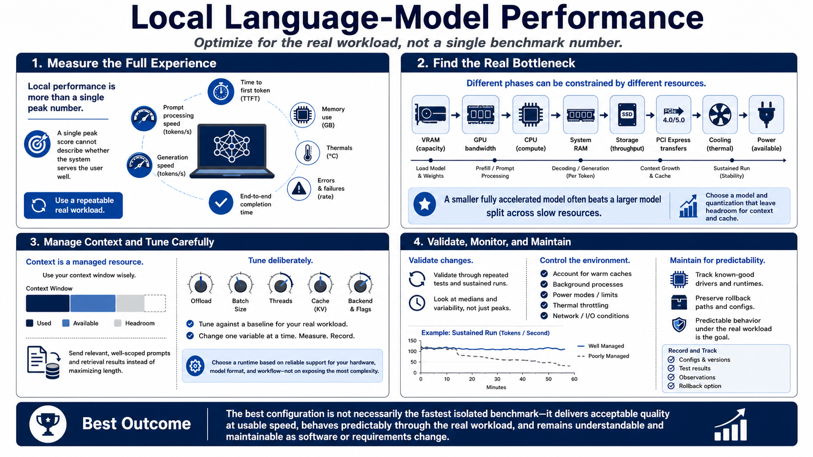

Course Summary and Key Takeaways
Connecting to LMS... Progress: in progress

Narration
Local language-model performance combines responsiveness, throughput, quality, stability, and usability. Measure time to first token, prompt processing, generation speed, end-to-end completion, memory use, thermals, and errors on a repeatable real workload. A single peak number cannot describe whether the system serves its user well.
Find the actual bottleneck. VRAM, GPU bandwidth, CPU, system RAM, storage, PCI Express transfers, cooling, and power can constrain different phases. Choose a model and quantization that leave headroom for context and cache. A smaller fully accelerated model often outperforms a larger model split across slow resources while remaining easier to operate.
Manage context as a resource. Send relevant, well-scoped prompts and retrieval results instead of maximizing length. Tune offload, batch, threads, cache, and backend against the baseline, one variable at a time. Select a runtime because it supports the hardware, model format, and workflow reliably, not because it exposes the most complexity.
Validate changes through repeated tests and sustained runs. Account for warm caches, background processes, power modes, and thermal throttling. Track known-good drivers and runtimes and preserve rollback. The best configuration is not necessarily the fastest isolated benchmark. It delivers acceptable quality at usable speed, behaves predictably through the real workload, and remains understandable and maintainable when software or requirements change.